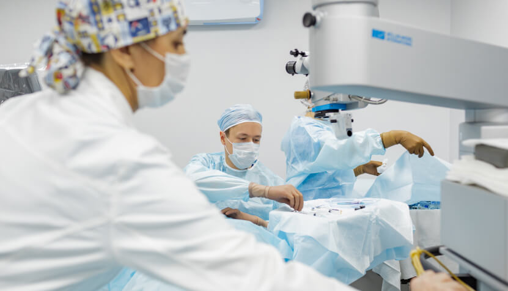

По данным министерства здравоохранения, у 10 миллионов россиян есть катаракта. Что касается нашей клиники, то половина всех обращений связана именно с этим заболеванием. Ежегодно мы проводим 1 000 операций, чтобы избавить пациентов от недуга и вернуть остроту зрения.
Каждому человеку важно понять, что такое катаракта. Болезнь связана с неизбежным старением организма – против такого обстоятельства не существует защиты и профилактики, его невозможно предотвратить. В зоне риска оказываются все без исключения люди от 60 лет. Чем вы старше, тем выше вероятность проблем со зрением. И это не страшилка, а факт: после 80 лет катаракта встречается у 90 % пожилых. Вдобавок в последние годы она «молодеет» – все чаще настигает мужчин и женщин в возрасте 50–55 лет.
Так что давайте разбираться в сути заболевания и в том, как лечить катаракту. Вы поймете, почему после 40 лет обязательно нужно проходить диагностику глаз минимум раз в год, даже если ничего не беспокоит, и записывать к офтальмологу своих пожилых родителей, бабушек и дедушек.
Заболевание связано с помутнением хрусталика. Этому есть естественная причина: на протяжении всей нашей жизни хрусталик обновляется, «обрастает» волокнами. К 60 годам он уплотняется, теряет свою первоначальную прозрачность, из-за чего пропускает намного меньше света. Зрение становится нечетким, расплывчатым. Появляется ощущение, что глаза застилает туман и пелена. Часто пациенты описывают состояние так – мир кажется тусклым. Не нужно надеяться, что болезнь пройдет сама или перестанет прогрессировать. Ухудшение со временем будет только продолжаться и может привести к полной потере зрения.
Недуг развивается настолько медленно, что порой много лет человек не ощущает никаких изменений. Особенно если катаракта появилась не на центральной части хрусталика, а на периферии. Единственный способ поставить диагноз – регулярно посещать врача.
Как мы уже отметили, основная причина катаракты у большинства людей – старение организма. В отдельных случаях ее могут спровоцировать другие заболевания (например, сахарный диабет), травмы головы или солнечные ожоги сетчатки глаза.
Если вы заметили у себя следующие симптомы катаракты, это повод пойти на осмотр к офтальмологу:
Ошибка многих россиян в заблуждении, что с катарактой без проблем можно «уживаться». Но это не так. По наблюдению хирургов, чаще всего падают пожилые люди с плохим зрением. А результатом таких падений нередко становятся переломы шейки бедра, после которых человек долго восстанавливается или вообще перестает нормально ходить. Чтобы твердо стоять на ногах и видеть мир в ярких красках, с симптомами катаракты надо бороться.
От этой болезни не существует лекарства – никакие капли здесь не помогут. Витаминные препараты способны только улучшить обмен веществ внутри глаза и отсрочить развитие недуга. Единственный и максимально эффективный выход – сделать операцию. Вокруг хирургического вмешательства ходит много мифов: кто-то считает, что рискованно трогать хрусталик, других пугает сам процесс и стереотип о его болезненности.
Правдиво и понятно об операции расскажет главный врач клиники «Стандарт» Тимур Рашидович Галеев.
Операция называется факоэмульсификация. Выполняется ультразвуком через микропрокол в 1–2 мм – пациенту не делают разрезов и не накладывают швов. Все максимально просто: ультразвук «дробит» помутненный хрусталик, его остатки удаляются, а на место ставится искусственная линза. В нашей клинике мы используем американские хрусталики компании Alcon – самые проверенные и качественные. 50 миллионов имплантаций в мире провели именно с ними. Плюс в том, что с помощью данных технологий человек восстанавливается быстрее всего.
Необходимо знать, что такое катаракта, но не надо ее бояться – безболезненная операция длится 10–15 минут, анестезия местная (закапываются капли), а нормальное зрение восстанавливается в тот же день. Ложиться в больницу не нужно: как правило, сутки спокойного отдыха, и вы возвращаетесь к повседневной жизни. Но естественно период восстановления зависит от степени заболевания. У 80-летней бабушки с запущенной катарактой он будет длиннее обычного.
Что касается универсальности, то метод подходит всем пациентам. Удаление катаракты – одна из самых распространенных процедур. А вероятность ее успешного итога составляет 99 %.
В первый месяц необходимо закапывать прописанные капли и вести себя осторожнее: не ходить в бассейн и баню, воздержаться от работы в пыльных и грязных условиях, скажем, в огороде. Офисным сотрудникам надо будет на 1–2 недели сделать перерыв, а потом возвращаться к своим обязанностям.

Жителям Пензы не нужно никуда ехать, чтобы сделать качественную операцию по удалению катаракты. В клинике «Стандарт» используются современные технологии мировой микрохирургии глаза, оборудование из Европы и США. Хрусталик подбирается на специальном оборудовании с искусственным интеллектом. В течение месяца после факоэмульсификации пациента наблюдают бесплатно. А в течение года действует скидка 50 % на диагностику. Позаботьтесь о здоровье глаз и запишитесь на консультацию с 8:00 до 19:00 по тел. 23-70-70. Только специалист точно определит причины и симптомы катаракты. Кроме того, рекомендуем рассказать, что такое катаракта, своим старшим родственникам – ведь от болезни никто не застрахован.
От причин отслоения сетчатки глаза полностью застраховаться не получится, а вот снизить риски можно.
Не забывайте посещать офтальмолога раз в год. Если есть наследственная предрасположенность к проблемам со зрением, лучше встречаться с врачом каждые полгода.
Покажите малыша специалисту в 6 месяцев, особенно если заметите повышенное слезотечение. Если все в порядке, следующий осмотр планируйте после двух лет, затем – в пять лет. С 14 лет проверять у ребенка глазное дно надо ежегодно.
Предлагаем пройти полное обследование в нашей клинике на новейших медицинских комплексах из США, Германии, Японии. Диагностика занимает 120 минут, включает компьютерное определение рефракции, измерение внутриглазного давления, исследование роговицы и полей зрения, тщательную проверку сетчатки. По итогам вы получите рекомендации от врача либо варианты лечения, если обнаружены симптомы отслоения сетчатки или другие дефекты. Запись на прием идет ежедневно с 8:00 до 19:00 по тел: 23-70-70.